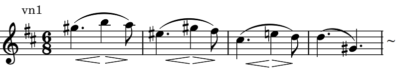

ゲーゼ: 弦楽四重奏曲二長調
前回出てきたヴァイオリニスト、フェルディナンド・ダヴィッドは、メンデルスゾーンのヴァイオリン協奏曲（ホ短調）への助言および初演を行ったことで知られているが、その初演でゲヴァントハウス管弦楽団を指揮していたのがデンマークの作曲家でメンデルスゾーンの後継者と目されていたニルス・ゲーゼであった。CPOから室内楽集が5枚ほど出ており、その第5集に表題の『弦楽四重奏曲二長調(Op. 63)』が入っている。最晩年の作品でありほとんど19世紀も終わる頃に完成したものだが、明快で古典的な作品である。これを時代錯誤と言ってもしょうがないだろう。ゲーゼは1817年生まれで長生きだったというだけのこと。あまり難しいことを考える必要もなさそうな、チャーミングで親しみやすい曲に仕上がっている。声部の応酬も上品に交わされる。ヴァイオリニストの作曲家らしい発想で自然に納まるフレーズが多いのも肩が凝らなくてよい。先輩であったメンデルスゾーンの楽曲には時々refreshingという言葉がこの上なく当てはまることがあるが、この曲もその美点を備えていると思う。
Niels W. Gade: String Quartet No. 1
in D Major, Op. 63
Ensemble MidtVest
(2016)
このEnsemble MidtVestによるCPOのアルバムのほか、DACAPOレーベルのCopenhagen SQによる1960年代の録音など古くから知られる演奏もあって、後者の録音が今一つなのを除けばどちらも文句なしに楽しめる。BISのKontra Qによる演奏も結構古いせいか音が硬く、また楽章間のテンポのコントラストがちょっとやり過ぎかと思うが、第1楽章第2主題の結尾（下記譜例）、CisからEへのポルタメントは気が利いている。再現部でもちゃんと同じようになっている。

(Apr. 20, 2024)